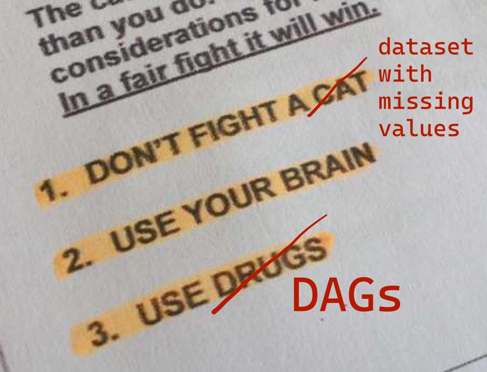
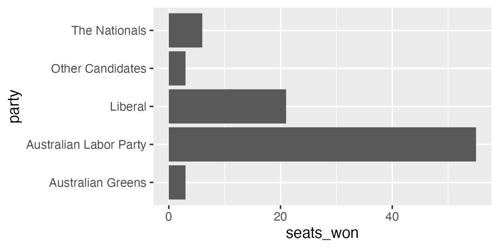

An attempt to understand in detail how Multiple Imputation by Chained Equations (MICE) works, by coding it up from scratch.
I’ve just spent most of a day faffing around trying to get Quarto to produce a nice PDF file that I like the look of and which meets my university’s formatting requirements for a PhD thesis. Maybe my pain and suffering can help reduce yours.
Wherein I try to make sense of ongoing debates in the statistical community about how to analyse and report clinical trials targeting binary outcomes, and then write some R code to practice what I hesitantly preach.

